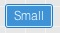
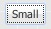
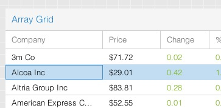
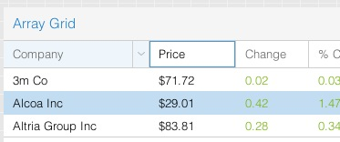
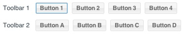

Accessibility
Many classes have shortcut names used when creating (instantiating) a class with a
configuration object. The shortcut name is referred to as an alias (or xtype if the
class extends Ext.Component). The alias/xtype is listed next to the class name of
applicable classes for quick reference.
Framework classes or their members may be specified as private or protected. Else,
the class / member is public. Public, protected, and private are access
descriptors used to convey how and when the class or class member should be used.
Public classes and class members are available for use by any other class or application code and may be relied upon as a stable and persistent within major product versions. Public classes and members may safely be extended via a subclass.
Protected class members are stable public members intended to be used by the
owning class or its subclasses. Protected members may safely be extended via a subclass.
Private classes and class members are used internally by the framework and are not intended to be used by application developers. Private classes and members may change or be omitted from the framework at any time without notice and should not be relied upon in application logic.
static label next to the
method name. *See Static below.Below is an example class member that we can disect to show the syntax of a class member (the lookupComponent method as viewed from the Ext.button.Button class in this case).
Let's look at each part of the member row:
lookupComponent in this example)( item ) in this example)Ext.Component in this case). This may be omitted for methods that do not
return anything other than undefined or may display as multiple possible values
separated by a forward slash / signifying that what is returned may depend on the
results of the method call (i.e. a method may return a Component if a get method calls is
successful or false if unsuccessful which would be displayed as
Ext.Component/Boolean).PROTECTED in
this example - see the Flags section below)Ext.container.Container in this example). The source
class will be displayed as a blue link if the member originates from the current class
and gray if it is inherited from an ancestor or mixed-in class.view source in the example)item : Object in the example).undefined a "Returns" section
will note the type of class or object returned and a description (Ext.Component in the
example)Available since 3.4.0 - not pictured in
the example) just after the member descriptionDefaults to: false)The API documentation uses a number of flags to further commnicate the class member's function and intent. The label may be represented by a text label, an abbreviation, or an icon.
classInstance.method1().method2().etc();false is returned from
an event handler- Indicates a framework class
- A singleton framework class. *See the singleton flag for more information
- A component-type framework class (any class within the Ext JS framework that extends Ext.Component)
- Indicates that the class, member, or guide is new in the currently viewed version
- Indicates a class member of type config
- Indicates a class member of type property
- Indicates a class member of type
method
- Indicates a class member of type event
- Indicates a class member of type
theme variable
- Indicates a class member of type
theme mixin
- Indicates that the class, member, or guide is new in the currently viewed version
Just below the class name on an API doc page is a row of buttons corresponding to the types of members owned by the current class. Each button shows a count of members by type (this count is updated as filters are applied). Clicking the button will navigate you to that member section. Hovering over the member-type button will reveal a popup menu of all members of that type for quick navigation.
Getting and setter methods that correlate to a class config option will show up in the methods section as well as in the configs section of both the API doc and the member-type menus just beneath the config they work with. The getter and setter method documentation will be found in the config row for easy reference.
Your page history is kept in localstorage and displayed (using the available real estate) just below the top title bar. By default, the only search results shown are the pages matching the product / version you're currently viewing. You can expand what is displayed by clicking on the button on the right-hand side of the history bar and choosing the "All" radio option. This will show all recent pages in the history bar for all products / versions.
Within the history config menu you will also see a listing of your recent page visits. The results are filtered by the "Current Product / Version" and "All" radio options. Clicking on the button will clear the history bar as well as the history kept in local storage.
If "All" is selected in the history config menu the checkbox option for "Show product details in the history bar" will be enabled. When checked, the product/version for each historic page will show alongside the page name in the history bar. Hovering the cursor over the page names in the history bar will also show the product/version as a tooltip.
Both API docs and guides can be searched for using the search field at the top of the page.
On API doc pages there is also a filter input field that filters the member rows using the filter string. In addition to filtering by string you can filter the class members by access level, inheritance, and read only. This is done using the checkboxes at the top of the page.
The checkbox at the bottom of the API class navigation tree filters the class list to include or exclude private classes.
Clicking on an empty search field will show your last 10 searches for quick navigation.
Each API doc page (with the exception of Javascript primitives pages) has a menu view of metadata relating to that class. This metadata view will have one or more of the following:
Ext.button.Button class has an alternate class name of Ext.Button). Alternate class
names are commonly maintained for backward compatibility.Runnable examples (Fiddles) are expanded on a page by default. You can collapse and expand example code blocks individually using the arrow on the top-left of the code block. You can also toggle the collapse state of all examples using the toggle button on the top-right of the page. The toggle-all state will be remembered between page loads.
Class members are collapsed on a page by default. You can expand and collapse members using the arrow icon on the left of the member row or globally using the expand / collapse all toggle button top-right.
Viewing the docs on narrower screens or browsers will result in a view optimized for a smaller form factor. The primary differences between the desktop and "mobile" view are:
The class source can be viewed by clicking on the class name at the top of an API doc page. The source for class members can be viewed by clicking on the "view source" link on the right-hand side of the member row.
Ext JS 5.0.1+ makes it possible to create highly accessible JavaScript applications by providing the tools that developers need to achieve Section 508 and ARIA compliance. Ext JS makes it easy for application developers to create UIs that are usable by people using assistive technologies to navigate the web.
What does software accessibility mean? In general, accessibility means that the functionality and content of an application is available and navigable to:
In 1998, the United States Congress passed the "Section 508 Amendment to the Rehabilitation Act of 1973", more commonly known as "Section 508". Section 508 requires Federal agencies to make all electronic information readily available to people with disabilities. Section 508 accessibility is a requirement for anyone producing applications for U.S. government agencies.
However, accessibility is beneficial to all applications since the additional features enable them to reach a larger number of users. Web applications can make significant steps toward achieving compliance with Section 508 by following the guidelines spelled out in the Web Accessibility Initiative's "Accessible Rich Internet Applications Suite", otherwise known as WAI-ARIA or just "ARIA".
Thanks to Ext JS's built-in tab indexing and focus-ability, your browser should tab and focus as you would expect. With this approach, we are able to translate components into items that the browser understands for default keyboard navigable behavior.
Accessibility support in Ext JS is designed with two major goals in mind: keyboard navigation via focus and DOM attributes.
As of Ext JS 5.0.1, the focus and keyboard navigation functionality is "always on" due to
the class-level property known as focusable. This allows all keyboard enabled components
to interact with the user when tabbed into.
What this all really means is that focus is part of every application without any additional modifications needed by the developer.
Note: Based on the advise of accessibility experts, Ext JS's ARIA support is optimized for the Firefox browser. This recommendation was based on the adoption of Firefox by users of assistive technologies ("AT") as well as Firefox's market-leading support for accessibility features. Other browsers (and AT solutions not available on Firefox), while supported, will lag to some degree based on their level of standards compliance.
Focus styling is a method of visually indicating that an element is prepared to accept keyboard events or other user inputs. This is valuable (and necessary) for accessibility and power users that heavily rely upon keyboard navigation.
The framework provides a clear indication of the currently focused component, which updates
as the focused component is changed. This indication will generally be seen as an inner
border and/or body border on the focused element. This may vary slightly depending on your
application's theme. To give you control over these visual aspects, you may modify
multiple SASS variables and mixin parameters related to focus.
In previous releases, button focus styling was identical to hover styling. It tended to be a source of confusion for some users. In 5.0.1+, we changed buttons to use "inner" bordering to indicate focus. This takes the form of a 1px solid border directly inside the button's outer border in Neptune and Crisp themes.

In Classic themes, the focus border is rendered as a dotted outline around the Button's inner element, similar to the classic "Windows" look.

You may need to control the styling of a focused button when it is hovered or pressed separately from the default hover state. To accommodate this, we've added SASS variables for 2 additional button states - "focus-over" and "focus-pressed".
Tabs have not historically had a visual indication of focus. In Ext JS 5.0.1+, Tabs are treated similarly to Buttons. Focus comes in the form of a solid inner border in Neptune/Crisp themes and a dotted body outline in Classic.
Crisp:

Classic:

Just as with Buttons, Tabs have SASS variables for controlling two additional focus states - "focus-over" and "focus-active".
The focused grid cell also contains a distinct focus border as seen below:

Additionally, grid column headers can also be independently focused as seen below:

We expect support for keyboard navigation to be a welcome change for many applications, making them more accessible to more users. At the same time, we understand that all applications have different needs and requirements. In some cases, the default focus styling may not be desired, so we have provided the ability to customize the focus styling of any component using a robust API of SASS variables and mixins.
All of the variables having to do with focus styling will have the word "focus" in their name, so they should be easy to locate in the documentation. Simply navigate to the class documentation for the component you wish to style and scroll down to the "CSS Variables" section.
For example, to style the color of the focus border for the "default" button UI, one would
use the $button-default-inner-border-color-focus SASS variable. For more information
on how to use SASS in your application please refer to the
Theming Guide
Your application's focusable components are fully navigable using the keyboard without mouse interaction. In terms of Ext JS, this means that pressing tab key will advance focus beginning with the URL bar to the next focusable item within your application document's body.
However, certain containers such as toolbars have slightly different behavior. The tab key will advance focus between toolbars and arrow keys will move focus within the toolbar. This is how WAI-ARIA standards helps to ensure better usability by avoiding the need to press tab key excessively.
For this example, let's look at two toolbars containing multiple buttons, which are an example of focusable items.

Tabbing into "Toolbar 1" will focus "Button 1" as seen above. Continued tabbing will advance focus to the next component containing a focusable item. In this case, the next focusable item, "Button A", lives within "Toolbar 2". Focusable items may be buttons, tabs, form fields, grids, etc.
Alternatively, "shift + tab" will follow the tabindex in reverse order, abiding by the same rules as above. As an example, performing a "shift + tab" within "Toolbar 2" will return focus to "Toolbar 1".
Upon entering one of the above toolbars, you may also use your arrow keys to navigate between buttons. Your arrow keys will loop through all of the buttons within the toolbar. Upon reaching "Button 4", focus will loop back to "Button 1".
If you use your tab key to leave a toolbar, and then "shift + tab" back to said toolbar, the framework will restore focus to the previously focused button. This creates a form of state within your toolbar and other focusable containers.
Note: Upon entering an input field, arrow key navigation will only operate within said field. tab or shift-tab key press will then be necessary to exit the field.
A Component's DOM elements should use attributes that provide semantic information regarding the elements' type, state, and description. These attributes are used by assistive technologies, such as screen readers, to provide verbal cues to the user and can be categorized into two separate groups:
ARIA roles are the main indicator of a Component or Element's type. Roles are constant and do not change as the user interacts with a Component. The most commonly used ARIA Roles in Ext JS are Widget Roles. Many of these Widget Roles directly correspond to Ext JS components. Some examples of widget roles are:
DOM attributes are attributes that may change in response to user interaction or application state. An example of an ARIA State is the "aria-checked" attribute that is applied to a checkbox component when it is checked by the user. Likewise, an example of an ARIA Property is the "aria-invalid" property of a form field, which may be dynamically changed based on validation or user input.
We'll talk about enabling ARIA States and Properties in the ARIA package section below.
As of Ext JS 6+, ARIA functionality integrates directly into the component life-cycle. This means you won’t need a special “aria” package to get correct ARIA behavior. Applications will now support screen readers (like JAWS) without the need for special inclusion.
However, in Ext JS 5, the "ext-aria" package is a separate Cmd package that provides support for
ARIA States and Properties. The
'ext-aria' package should be included in the Sencha Cmd generated app.json file's
requires block like any other package.
For instance:
"requires": [
"ext-aria"
],
Once you've modified your application's app.json file, simply rebuild the application. After
building, your components will contain the ARIA states and properties described above.
That said, it is not necessary to directly require the ARIA package if your are utilizing "ext-theme-aria" in Ext JS 5 or "theme-aria" in Ext JS 6. The ARIA theme requires the ARIA package by default. We'll discuss implementing ARIA theme in the next section.
Note: If you're not familiar with building an application as described above, please visit our Getting Started guide for more information.
The ARIA theme is a high-contrast theme that makes applications easier for visually impaired users to view. It can be used out of the box or extended to create a customized look and feel.
To incorporate the Ext JS ARIA theme into your application, simply modify the theme
block in app.json.
The default theme setting should become one of the following:
Ext JS 5
/**
* The name of the theme for this application.
*/
"theme": "ext-theme-aria",
Ext JS 6
/**
* The name of the theme for this application.
*/
"theme": "theme-aria",
Once you've modified your application's app.json file, simply refresh the application. The
application should be utilizing the ARIA theme theme as seen below:

For information about custom theming, please check out the Ext JS Theming Guide.
Note: If you're not familiar with building an application as described above, please visit our Getting Started guide for more information.
Ext JS 5.0.1+ contains core functionality to support accessibility with our new focus and keyboard navigation additions. The ARIA package (included by default in Ext JS 6) and ARIA theme provides you with a much simpler path to creating an accessible application. We are working towards expanding functionality to provide more robust accessibility support in future releases.


 Ext JS | Terms of Use
Ext JS | Terms of Use